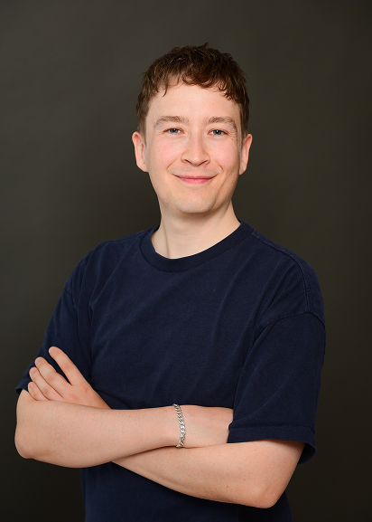

Hallo, ich bin Moritz.
UX-/UI-Designer mit gestalterischem Handwerk und Blick für technische Zusammenhänge: vom Gestaltungstechnischen Assistenten über die Ausbildung zum Mediengestalter Digital bis zum Studium als Medieningenieur. Praxis in Agentur und Softwareunternehmen gesammelt, u. a. bei Isogon Informationssysteme, wo aus einem Praktikum eine einjährige Projektzusammenarbeit im UX-/Interface-Design wurde. Mein Fokus: der Weg von Nutzerrecherche über Konzept und Prototyp bis zum getesteten Interface, im engen Austausch mit Entwicklung und Produkt.
So arbeite ich
Ich starte mit Fragen statt mit Screens und prüfe Ideen so früh wie möglich mit echten Nutzer:innen. KI nutze ich dabei als Werkzeug, das mich schneller und gründlicher macht: beim Recherchieren, beim Durchdenken von Konzepten und um Ideen früh als Prototyp greifbar zu machen. Neue Tools probiere ich gern aus, sobald sie auftauchen. Was davon für Nutzer:innen trägt, entscheide ich selbst.
Werkzeuge
Recherche und Konzept
- Miro
- Claude
- Perplexity
- NotebookLM
Design und Prototyping
- Figma
- Figma Agent
- Figma Make
- Claude Code
- HTML/CSS (Grundlagen)
Abseits vom Design
Ich bin im Norden aufgewachsen und schnell für Neues zu begeistern, auch abseits vom Design. Sportlich habe ich vieles ausprobiert, von Tischtennis über Jolle bis Kajak. Heute bin ich vor allem mit dem Rennrad in der Natur unterwegs. Zum Abschalten greife ich gern zu Videospielen, und mindestens einmal im Jahr geht es mit Freunden auf eine längere Reise.
Werdegang
- Weiterbildung Product Design, Digitale Leute School
- Isogon Informationssysteme, Kiel: Praktikum UX-Design, danach projektbezogen Webdesign
- B.Eng. Medieningenieur, Schwerpunkt UX/UI, FH Kiel. Bachelorarbeit: Second Brain
- Ausbildung Mediengestalter Digital und Print, ideenwerft GmbH, Kiel
- Fachabitur, Gestaltungstechnischer Assistent, Walther-Lehmkuhl-Schule, Neumünster